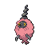
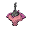

PokémonEMMA'S EMERALD
OFFICIAL Strategy Guide

No. 412
Burmy (Trash)
Bagworm Pokémon
Bug
Abilities: Shed Skin · hidden: Overcoat
Height: 0.2 m · Weight: 3.4 kg · Gender: 50% female
Egg groups: Bug · Catch rate: 120
Height: 0.2 m · Weight: 3.4 kg · Gender: 50% female
Egg groups: Bug · Catch rate: 120
When confronted by a lack of other materials, Burmy will create its cloak using dust and refuse. The cloak seems to be more comfortable than one would think.
Other forms: Burmy (Plant), Burmy (Sandy).
‹ PokédexNo. 412
Where to get it
A form of Burmy (Plant): get the base Pokémon first, the form change follows.
Evolution
- Level 20 (female)

Wormadam (Trash) - Level 20 (male)

Base stats
| HP | 40 | |
| Attack | 29 | |
| Defense | 45 | |
| Speed | 36 | |
| Sp. Atk | 29 | |
| Sp. Def | 45 | |
| Total | 224 |
Level-up moves
| Lv. | Move | Type | Cat. | Pow. | Acc. | PP |
|---|---|---|---|---|---|---|
| 1 | Protect | Normal | Status | — | — | 10 |
| 10 | Tackle | Normal | Physical | 40 | 100 | 35 |
| 15 | Bug Bite | Bug | Physical | 60 | 100 | 20 |
| 20 | String Shot | Bug | Status | — | 95 | 40 |
TM and HM moves
| TM | Move | Type | Cat. | Pow. | Acc. | PP |
|---|---|---|---|---|---|---|
| TM10 | Hidden Power | Normal | Special | 60 | 100 | 15 |
| TM17 | Protect | Normal | Status | — | — | 10 |
Tutor moves
| Move | Type | Cat. | Pow. | Acc. | PP |
|---|---|---|---|---|---|
| Snore | Normal | Special | 50 | 100 | 15 |
801
Pokédex